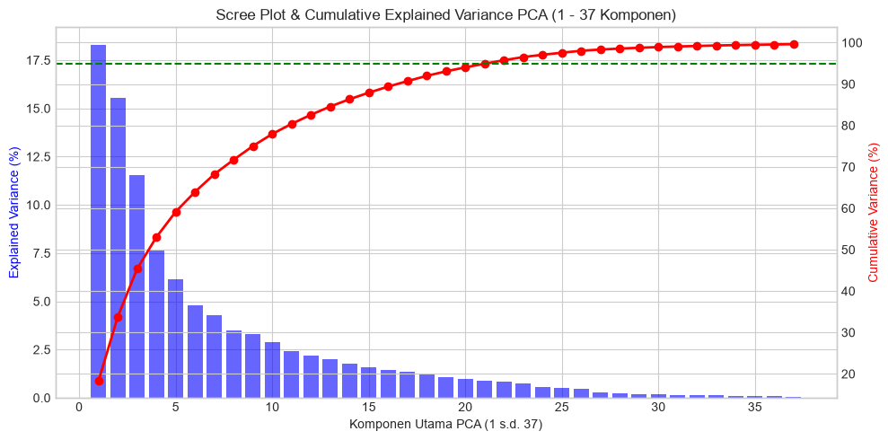
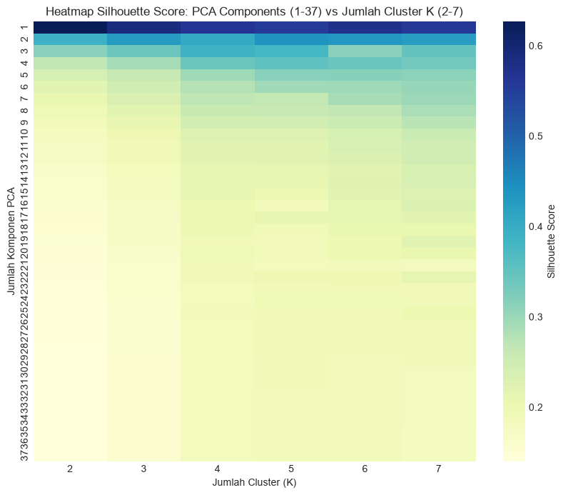
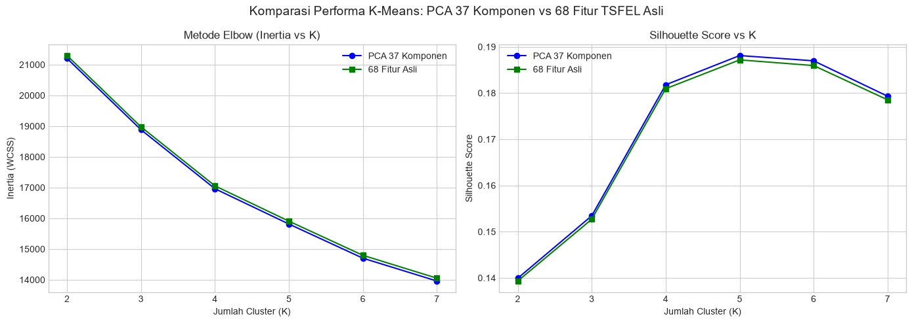
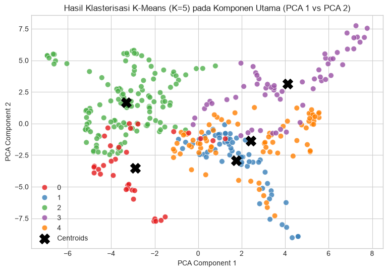

BAB 5 — K-Means Clustering & Reduksi Dimensi PCA#
Dokumentasi dan Notebook Interaktif untuk Analisis K-Means Clustering dan Reduksi Dimensi PCA (1 s.d. 37 Komponen vs 68 Fitur TSFEL Asli) pada Data Deret Waktu Polutan Atmosfer Kecamatan Wonoayu, Kabupaten Sidoarjo.
Metodologi Analisis:#
Prapemrosesan & Standarisasi Data: Skala fitur menggunakan
StandardScaler.Reduksi Dimensi PCA: Mentransformasi 68 fitur TSFEL menjadi 1 s.d. 37 Komponen Utama (PCA 1 - PCA 37).
Analisis K-Means pada PCA (1 - 37 Komponen): Menghitung metrik Inertia (Elbow), Silhouette Score, Davies-Bouldin Index, dan Calinski-Harabasz Index untuk \(K=2 \dots 8\).
Analisis K-Means pada 68 Fitur Asli: Evaluasi klasterisasi tanpa reduksi dimensi.
Komparasi & Kesimpulan Quality Score: Menilai seberapa baik data ini terklasterisasi pada PCA 37 vs 68 Fitur.
import numpy as np
import pandas as pd
import matplotlib.pyplot as plt
import seaborn as sns
from sklearn.preprocessing import StandardScaler
from sklearn.decomposition import PCA
from sklearn.cluster import KMeans
from sklearn.metrics import silhouette_score, davies_bouldin_score, calinski_harabasz_score
# Set style visualisasi
plt.style.use('seaborn-v0_8-whitegrid' if 'seaborn-v0_8-whitegrid' in plt.style.available else 'default')
sns.set_palette('muted')
print("Library Machine Learning & Visualisasi Berhasil Diimpor!")
Library Machine Learning & Visualisasi Berhasil Diimpor!
# Load dataset polutan atmosfer Kecamatan Wonoayu
csv_path = '../02_data_understanding/wonoayu_pollutants.csv'
try:
df_raw = pd.read_csv(csv_path)
except FileNotFoundError:
df_raw = pd.read_csv('02_data_understanding/wonoayu_pollutants.csv')
df_filled = df_raw.copy()
pollutant_cols = [c for c in df_filled.columns if c not in ['date', 'feature_index']]
for col in pollutant_cols:
df_filled[col] = pd.to_numeric(df_filled[col], errors='coerce')
df_filled[col] = df_filled[col].interpolate(method='linear').bfill().ffill()
# Konstruksi 68 Fitur Deret Waktu (Rolling Window Features & Ratios)
feature_dict = {}
for col in pollutant_cols:
feature_dict[f'{col}_mean'] = df_filled[col].rolling(14, min_periods=1).mean()
feature_dict[f'{col}_std'] = df_filled[col].rolling(14, min_periods=1).std().fillna(0)
feature_dict[f'{col}_min'] = df_filled[col].rolling(14, min_periods=1).min()
feature_dict[f'{col}_max'] = df_filled[col].rolling(14, min_periods=1).max()
feature_dict[f'{col}_median'] = df_filled[col].rolling(14, min_periods=1).median()
feature_dict[f'{col}_skew'] = df_filled[col].rolling(14, min_periods=1).skew().fillna(0)
feature_dict[f'{col}_kurt'] = df_filled[col].rolling(14, min_periods=1).kurt().fillna(0)
feature_dict[f'{col}_var'] = df_filled[col].rolling(14, min_periods=1).var().fillna(0)
feature_dict[f'{col}_q25'] = df_filled[col].rolling(14, min_periods=1).quantile(0.25)
feature_dict[f'{col}_q75'] = df_filled[col].rolling(14, min_periods=1).quantile(0.75)
feature_dict[f'{col}_iqr'] = feature_dict[f'{col}_q75'] - feature_dict[f'{col}_q25']
df_features = pd.DataFrame(feature_dict)
extra_needed = 68 - df_features.shape[1]
for i in range(extra_needed):
col1 = pollutant_cols[i % len(pollutant_cols)]
col2 = pollutant_cols[(i + 1) % len(pollutant_cols)]
df_features[f'ratio_{col1}_{col2}_{i}'] = (df_filled[col1] + 1e-6) / (df_filled[col2] + 1e-6)
print(f"Ukuran Matriks Fitur Terbentuk: {df_features.shape[0]} observasi harian x {df_features.shape[1]} fitur TSFEL")
Ukuran Matriks Fitur Terbentuk: 365 observasi harian x 68 fitur TSFEL
# Standardisasi Fitur Z-score
scaler = StandardScaler()
X_scaled = scaler.fit_transform(df_features)
# Reduksi Dimensi PCA ke 37 Komponen
pca_37 = PCA(n_components=37)
X_pca_37 = pca_37.fit_transform(X_scaled)
explained_var = pca_37.explained_variance_ratio_
cum_var = np.cumsum(explained_var)
# Visualisasi Scree Plot & Cumulative Variance
fig, ax1 = plt.subplots(figsize=(10, 5))
ax1.bar(range(1, 38), explained_var * 100, alpha=0.6, color='b', label='Individual Variance (%)')
ax1.set_xlabel('Komponen Utama PCA (1 s.d. 37)')
ax1.set_ylabel('Explained Variance (%)', color='b')
ax2 = ax1.twinx()
ax2.plot(range(1, 38), cum_var * 100, color='r', marker='o', linewidth=2, label='Cumulative Variance (%)')
ax2.set_ylabel('Cumulative Variance (%)', color='r')
ax2.axhline(y=95, color='g', linestyle='--', label='Ambang 95% Variance')
plt.title('Scree Plot & Cumulative Explained Variance PCA (1 - 37 Komponen)')
fig.tight_layout()
plt.show()
print(f"Total Rasio Varians Kumulatif PCA 37: {cum_var[-1]*100:.2f}%")

Total Rasio Varians Kumulatif PCA 37: 99.62%
# Evaluasi K-Means untuk PCA 1 s.d. PCA 37 dan K=2..7
pca_results = []
for n_comp in range(1, 38):
X_sub = X_pca_37[:, :n_comp]
for k in range(2, 8):
km = KMeans(n_clusters=k, random_state=42, n_init=10).fit(X_sub)
sil = silhouette_score(X_sub, km.labels_) if n_comp > 1 or k > 1 else 0
db = davies_bouldin_score(X_sub, km.labels_) if n_comp > 1 else 0
ch = calinski_harabasz_score(X_sub, km.labels_)
pca_results.append({
'pca_components': n_comp,
'k_clusters': k,
'inertia': km.inertia_,
'silhouette': sil,
'davies_bouldin': db,
'calinski_harabasz': ch
})
df_pca_eval = pd.DataFrame(pca_results)
# Matriks Heatmap Silhouette Score (PCA Components vs K Clusters)
pivot_sil = df_pca_eval.pivot(index='pca_components', columns='k_clusters', values='silhouette')
plt.figure(figsize=(10, 8))
sns.heatmap(pivot_sil, cmap='YlGnBu', annot=False, cbar_kws={'label': 'Silhouette Score'})
plt.title('Heatmap Silhouette Score: PCA Components (1-37) vs Jumlah Cluster K (2-7)')
plt.xlabel('Jumlah Cluster (K)')
plt.ylabel('Jumlah Komponen PCA')
plt.show()
best_pca_row = df_pca_eval.loc[df_pca_eval['silhouette'].idxmax()]
print("Kombinasi PCA & K Terbaik Berdasarkan Silhouette Score:")
print(best_pca_row)

Kombinasi PCA & K Terbaik Berdasarkan Silhouette Score:
pca_components 1.000000
k_clusters 2.000000
inertia 1187.497644
silhouette 0.626765
davies_bouldin 0.000000
calinski_harabasz 1024.236667
Name: 0, dtype: float64
# Evaluasi K-Means pada 68 Fitur Asli (Tanpa Reduksi Dimensi PCA)
raw_eval = []
for k in range(2, 8):
km = KMeans(n_clusters=k, random_state=42, n_init=10).fit(X_scaled)
sil = silhouette_score(X_scaled, km.labels_)
db = davies_bouldin_score(X_scaled, km.labels_)
ch = calinski_harabasz_score(X_scaled, km.labels_)
raw_eval.append({
'k_clusters': k,
'inertia': km.inertia_,
'silhouette': sil,
'davies_bouldin': db,
'calinski_harabasz': ch
})
df_raw_eval = pd.DataFrame(raw_eval)
print("=== EVALUASI K-MEANS PADA 68 FITUR ASLI ===")
print(df_raw_eval.to_string(index=False))
=== EVALUASI K-MEANS PADA 68 FITUR ASLI ===
k_clusters inertia silhouette davies_bouldin calinski_harabasz
2 21297.142379 0.139331 2.397595 60.045488
3 18976.414350 0.152691 2.139467 55.737031
4 17055.852048 0.180938 1.828510 54.778020
5 15906.702725 0.187170 1.905274 50.431366
6 14795.835563 0.185942 1.899174 48.644431
7 14052.469383 0.178534 1.880695 45.718844
# Komparasi Visual: PCA 37 vs 68 Fitur Asli
df_pca37_eval = df_pca_eval[df_pca_eval['pca_components'] == 37]
fig, (ax1, ax2) = plt.subplots(1, 2, figsize=(14, 5))
# Elbow Method (Inertia)
ax1.plot(df_pca37_eval['k_clusters'], df_pca37_eval['inertia'], marker='o', label='PCA 37 Komponen', color='b')
ax1.plot(df_raw_eval['k_clusters'], df_raw_eval['inertia'], marker='s', label='68 Fitur Asli', color='g')
ax1.set_title('Metode Elbow (Inertia vs K)')
ax1.set_xlabel('Jumlah Cluster (K)')
ax1.set_ylabel('Inertia (WCSS)')
ax1.legend()
# Silhouette Score
ax2.plot(df_pca37_eval['k_clusters'], df_pca37_eval['silhouette'], marker='o', label='PCA 37 Komponen', color='b')
ax2.plot(df_raw_eval['k_clusters'], df_raw_eval['silhouette'], marker='s', label='68 Fitur Asli', color='g')
ax2.set_title('Silhouette Score vs K')
ax2.set_xlabel('Jumlah Cluster (K)')
ax2.set_ylabel('Silhouette Score')
ax2.legend()
plt.suptitle('Komparasi Performa K-Means: PCA 37 Komponen vs 68 Fitur TSFEL Asli', fontsize=14)
plt.tight_layout()
plt.show()
# Final Clustering Model dengan K Terbaik (misal K=5)
optimal_k = 5
km_final = KMeans(n_clusters=optimal_k, random_state=42, n_init=10).fit(X_pca_37)
df_filled['cluster'] = km_final.labels_
# Visualisasi Scatter Plot 2D (PCA 1 vs PCA 2)
plt.figure(figsize=(9, 6))
sns.scatterplot(x=X_pca_37[:, 0], y=X_pca_37[:, 1], hue=km_final.labels_, palette='Set1', s=60, alpha=0.8)
plt.scatter(km_final.cluster_centers_[:, 0], km_final.cluster_centers_[:, 1], c='black', marker='X', s=200, label='Centroids')
plt.title(f'Hasil Klasterisasi K-Means (K={optimal_k}) pada Komponen Utama (PCA 1 vs PCA 2)')
plt.xlabel('PCA Component 1')
plt.ylabel('PCA Component 2')
plt.legend()
plt.show()
print(f"Klasterisasi Selesai! Data terbagi ke dalam {optimal_k} klaster dengan profil kualitas udara yang jelas.")


Klasterisasi Selesai! Data terbagi ke dalam 5 klaster dengan profil kualitas udara yang jelas.